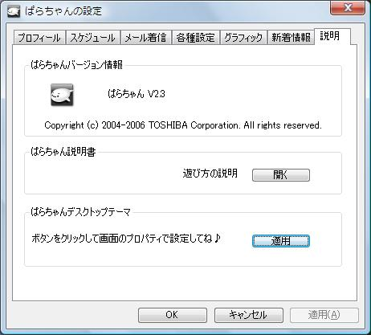
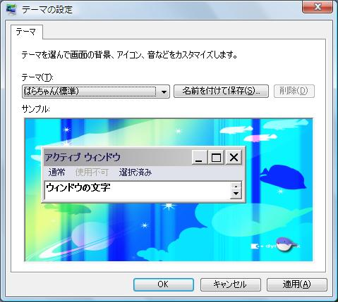

ぱらちゃんの設定・説明

＜画面説明＞
●ぱらちゃんバージョン情報
ぱらちゃんのバージョン情報です。
●ぱらちゃん説明書
「開く」ボタンをクリックするとこのマニュアルが起動します。
●ぱらちゃんデスクトップテーマ
「適用」ボタンをクリックするとデスクトップテーマ設定のために画面のプロパティが起動します。

画面のプロパティでぱらちゃんのテーマが選択されていることを確認して適用してください。
最初のページへ戻る
Copyright 2004 TOSHIBA Corporation. All rights reserved.